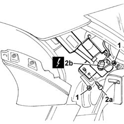
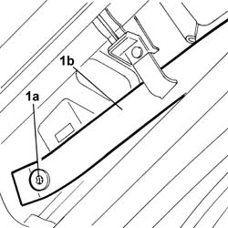
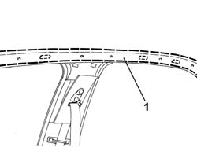
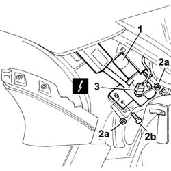

5580C52 Head Bag module (one), left or right - R.R.
- Path
- Procedures > 55 ELECTRICAL EQUIPMENT > 5580 SPECIAL ACCESSORIES > 5580C AIR BAG SYSTEM > 5580C52 Head Bag module (one), left or right - R.R.
- Kind
- repair procedure (removal / refitting; the operation number is the code)
- Applies to
- all engines; all production periods
- Interactive page
- https://sloeber94.github.io/elrnDB-lThss/en/#/150817
Applies to: all engines; all production periods
 Removing
Removing
 Refitting
Refitting1. Loosen the fixing nuts.
2. Undo the fixing bolt (2a) and disconnect the electrical connector (2b).
 | Description | Connector |
|---|---|---|
2b | Driver's Head Bag | Q040 |
| Description | Connector |
|---|---|---|
2b | Passenger Head Bag | Q041 |

Applies to: all engines; all production periods
1. Working in the area of the front pillar, undo the bolt (1a) fixing the safety band (1b) for the Air Bag module.

Applies to: all engines; all production periods
1. Lower the roof lining, as necessary and remove the module.

Applies to: all engines; all production periods
- Place the Air Bag module in the special cupboard, resting it on a free surface with the bag facing upwards.
Applies to: all engines; all production periods
Refitting
Removing- If a new Air Bag module is being fitted, place the labels in position.
- Remove the detachable part of the adhesive label from the new module and place it in a special file containing the vehicle data (model, registration details, chassis no. etc.) and the serial number of the old module. This file should be kept for future checks.
- An new adhesive plate comes with the module and should be stuck on top of the existing one. Beforehand, however, it needs to be perforated at the same month and 10 years after the year in which the module is fitted (e.g. 2009 for 1999).
1. Fit the Air Bag module in the housing under the roof lining.
Applies to: all engines; all production periods
1. Working in the area of the front pillar, tighten the bolt (1a) fixing the safety band (1b) for the Air Bag module.
Applies to: all engines; all production periods
1. Fit the Air Bag module charge in the housing.
2. Tighten the fixing nuts (2a) and the bolt (2b).
| Description | Connector |
|---|---|---|
3 | Passenger Head Bag | Q041 |
3. Connect the electrical connector for the Air Bag module.
| Description | Connector |
|---|---|---|
3 | Driver's Head Bag | Q040 |
